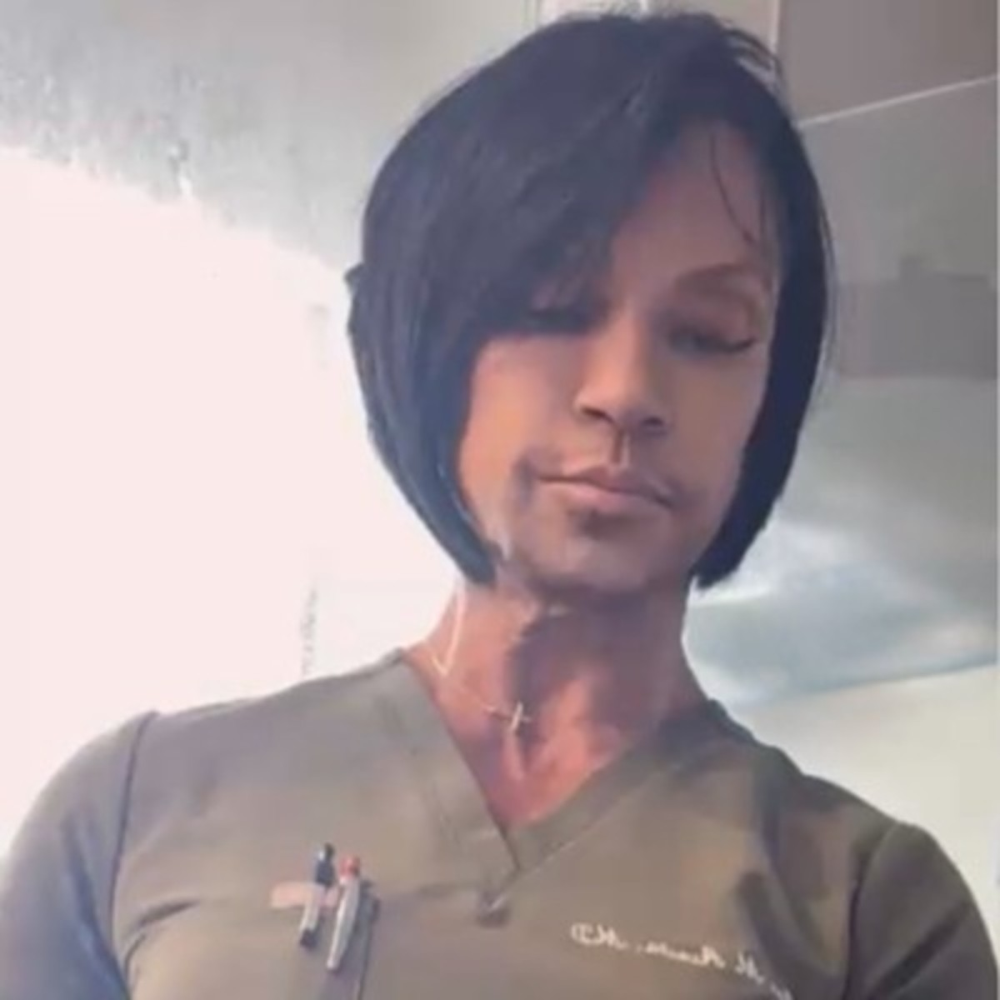

Muestra de diseño. Esta foto viene de LinkedIn y tiene baja resolución: se cambiará por la original.
Médica y propietaria de Advance Medical Research Center, en Miami.
Contactar a la doctora
Aquí irá su biografía real, escrita con sus palabras: su formación, su especialidad, sus credenciales y su historia con el centro.
FormaciónDoctora en Medicina (MD), Ross University School of Medicine
RolPropietaria y presidenta de Advance Medical Research Center
IdiomasEspañol e inglés